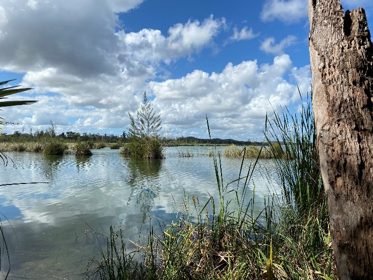
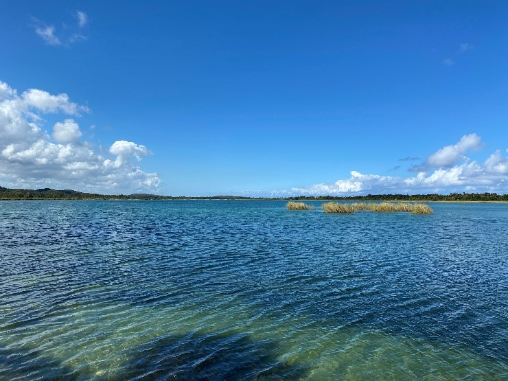

Puerto Rico Registry
Background
The Puerto Rico Watershed Resources Registry (WRR) began as a dialogue between U.S. Environmental Protection Agency Region 2 (EPA) staff from the Water Division (based in New York) and the Caribbean Environmental Protection Division (based in Puerto Rico) recognizing the need for a common repository, a tool that would contain consistent datasets and that would facilitate cooperation between partner agencies when evaluating projects. 
The goal of is to establish a targeted approach to identify the best opportunities for preserving, restoring, and conserving aquatic resources and uplands. EPA spearheaded this critical effort in collaboration with Puerto Rico Department of Natural and Environmental Resources (DNER), USDA Natural Resources Conservation Service (NRCS), National Oceanic and Atmospheric Administration (NOAA), Puerto Rico Department of Housing (PRDOH), Federal Emergency Management Agency (FEMA), and the US Fish and Wildlife Service (USFWS).
Collectively, this group is committed to identifying sites for wetlands and stream preservation and restoration in accordance with the watershed approach laid out in the 2008 Compensatory Mitigation Rule, as well as existing geospatial data gaps relevant to restoration in the archipelago. The project is currently funded by EPA. Additional potential financial sources are being explored. 
The Puerto Rico WRR is currently in its initial stages of development. A Technical Advisory Committee (TAC) was formed in early 2022, the initial selection of geospatial information has been made, and the inceptual version of the tool has been set up and is currently in staging. For more information about Puerto Rico’s WRR initiative, please contact the representatives below.
Additional Resources
Spatial Analyses
Get more information about the spatial analyses and factors selected by the Commonwealth of Puerto Rico for their models.
View HereListing of Map Services
Get more information about the map layers that are available on the Puerto Rico WRR interactive map
View HereUser Guide
Get more information about the WRR application and how to use it successfully.
View Here
Contacts
For more information on Puerto Rico's WRR you can contact the following:
| Name | Agency | Phone | |
|---|---|---|---|
| Sofía Olivero Lora | US Environmental Protection Agency, Region 2 Water Division | (212) 637-3838 | oliverolora.sofia@epa.gov |
| Marco Finocchiaro | US Environmental Protection Agency, Region 2 Water Division | (212) 637-3836 | finocchiaro.marco@epa.gov |
| Ricardo J. Colón Rivera | Puerto Rico Department of Natural and Environmental Resources | (787) 996-9334 | rcolon@drna.pr.gov |
| Manuel Matos Rodriguez | USDA Natural Resources Conservation Service, Caribbean Area State Office |
(787) 766-5064 | manuel.matos@usda.gov |
| Nate Herold | National Oceanic and Atmospheric Administration, NOAA's Office for Coastal Management for Coastal Management |
(843) 410-9620 | nate.herold@noaa.gov |
| Carmen I. Alicea Serrano | Puerto Rico Department of Housing, CDBG-DR Program | (787) 274-2527 | c.alicea@vivienda.pr.gov |
| Luis Betancourt | US Army Corps of Engineers, Jacksonville District | (305) 779-6051 | luis.o.betancourt@usace.army.mil |
| Maylene Pérez Robles | Federal Emergency Management Agency, EHP Unified Federal Review | (202) 702-1410 | maylene.perezrobles@fema.dhs.gov |
| Ela M. Cruz Nazario | Federal Emergency Management Agency, Community Planning and Capacity Building |
(202) 710-9599 | ela.cruznazario@fema.dhs.gov |
| Félix López | US Fish and Wildlife Service, Caribbean Ecological Services Field Office |
(305) 304-1128 | felix_lopez@fws.gov |
| Miguel A. García-Bermúdez | US Fish and Wildlife Service, Science Application Program | (305) 304-8127 | miguel_garcia-bermudez@fws.gov |
Partners